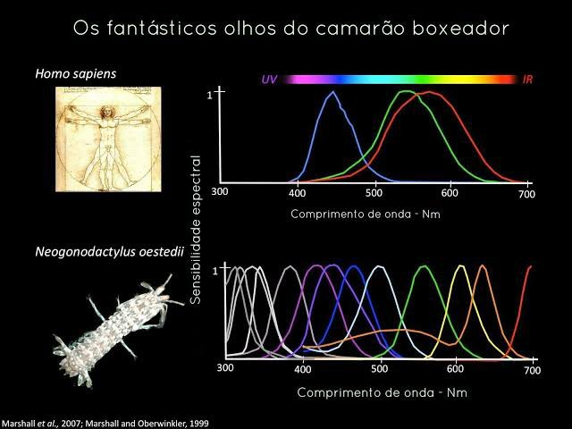

Fatos sobre o Stomatopoda
Introdução

Chamados popularmente de tamarutas ou de lacraias-do-mar no Brasil, seu nome ciêntífico é Odontodactylus scyllarus, é uma ordem de crustáceos marinhos da subclasse Hoplocarida , que agrupa cerca de 400 espécies, caracterizadas principalmente pela morfologia da segunda pata torácica, que é modificada em apêndice subquelado, lembrando uma pata de louva-a-deus.
Descrição

Os estomatópodes são predadores ativos que caçam presas com o auxílio de um sentido de visão muito apurado e capaz de interpretar polarização no espectro, apresentam variação no tamanho que pode ir de poucos milímetros até aproximadamente 40cm nas espécies maiores. São capazes de desferir um dos mais rápidos e violentos golpes do reino animal, um soco que pode apresentar a velocidade de um tiro de calibre .22 e uma pressão de impacto de 600 N/cm².
Visão
Esses animais possuem o mais complexo sistema de visão de cores do mundo animal, pois enxergam 12 cores primárias, correspondendo aos 12 pigmentos distintos em sua retina, possuem doze cones sensíveis à luz e outros quatro que filtram a luz (16 cones no total), o que lhes permite ver cores polarizadas e imagens multiespectrais.